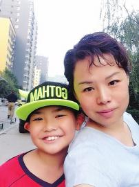

张格瑞和妈妈本版照片均由记者戚本英 摄□本报记者 戚本英
张格瑞今年9岁，在阳光100儿童话剧团里饰演“喷嚏精”，他生活中也如同角色一样，做事勇敢果断、洒脱仗义，很多小朋友都喜欢跟他交朋友。但他常常被称为“无敌破坏王”，因为他对周围的一切事物总想一探究竟，再结实的玩具经过他手也会“面目全非”。
多才多艺，因为话剧改变了他对跳舞的偏见
张格瑞今年上4年级，他的学习成绩不是很优异，但他的舞台表现力和逻辑动手能力不得不让人为他竖大拇指。妈妈说他的心思一直没有放在学习上，“如果把在舞台上或者钻研机器人的劲头放在学习上，成绩肯定比现在好很多。”
在别人眼里，张格瑞说话、做事非常爽快果断，绝对是一个“纯爷们”，“左摇右摆的跳舞绝对不是爷们干的事情。”在他心里，跳舞这样的举动只适合女生，所以，他从来不喜欢跳舞。参加话剧团以后，小演员们集中排练了一场宫廷舞，张格瑞刚开始心里多少有些不情愿，“男生和女生拉手算怎么回事？左摆右摆真没意思。”喜欢自由的张格瑞不喜欢被任何事情所束缚，就连肢体也不希望被别人摆布。
因对话剧和舞台的喜爱，张格瑞努力克服对跳舞的抵触心理，用功学习每个动作，“一些动作做不到位，回到家就跟我讨论。”妈妈说，张格瑞经常因为担心舞蹈动作不到位在家反复练习，“他跟我说，他不能因为自己而把整个团队落下。”现在他已经可以站在舞台上尽情跳舞了。
妈妈希望张格瑞健康快乐地长大，“每个人都有自己的生活方式，希望他以后不要跟任何人作比较，脚踏实地地做人和做事，将来能够做自己喜欢的工作。”乐观好心态，爸爸不在家他细心照顾生病的妈妈
相比一些小朋友，张格瑞并没有太多的特长和爱好，但能言善辩的他站在舞台上落落大方、毫不畏惧的表现深受观众和老师喜欢。在首场话剧海选时，张格瑞用他唯一会使用的乐器架子鼓获得了老师和观众的认可，在后期决赛，他选取了一段《哪吒闹海》的相声表演成功晋级。
张格瑞心态乐观，早已成了妈妈的小臂膀。从海选到决赛，他心情一直很放松，还不时抚慰妈妈。
说起决赛，妈妈现在还心有余悸。“相声两个人说才有意思。”张格瑞说，临时找不到小伙伴了，“一个人说相声太干，没办法只能拉着妈妈一起上台。”张格瑞从小记忆力就好，台词看一两遍便能记住，但对妈妈来说多少有些难度，上台前张格瑞一再叮嘱妈妈放宽心，“就当是过来玩的，即使选不上也无所谓。”妈妈因为担心忘记台词压力特别大，经过他的安慰和疏导，在舞台上娘俩合作得相当默契，语言明快含蓄，表情惟妙惟肖，受到现场评委的称赞。
张格瑞有时候很贪玩，常被称为“破坏王”，但关键时刻他的细心和责任感常令妈妈感动到落泪。爸爸工作在外，张格瑞看到生病的妈妈躺在床上，他很淡定地去找医药箱，发现没有适合妈妈吃的药，就自己出去买，“回来后张格瑞把水烧开端到我的身边，叮嘱我多注意休息，多喝水。”妈妈说，突然感觉到他瞬间长大了，“懂得照顾我关心我，爸爸不在家他就是我的小暖男。”